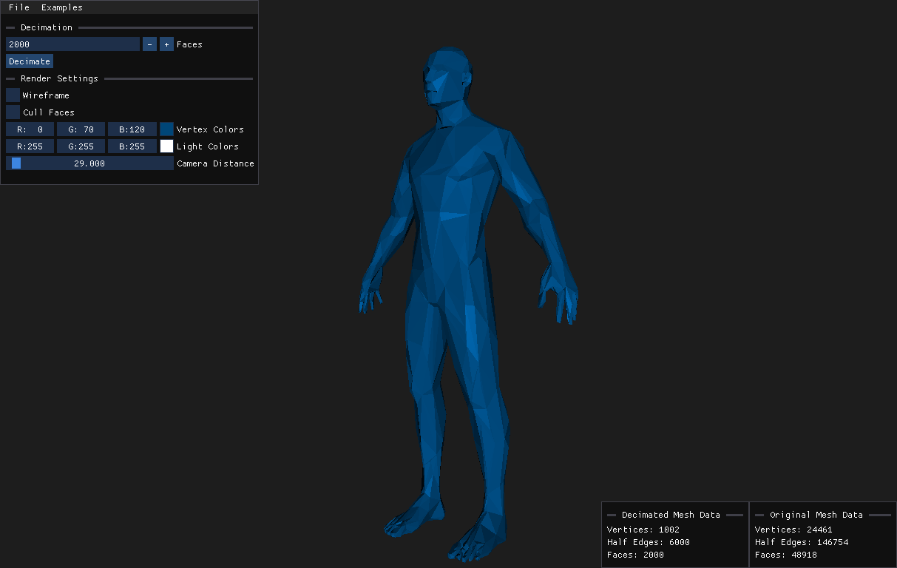

The Mesh Decimation Tool can reduce the amount of faces of a mesh. The tool tries to reduce the faces without changing the shape of the mesh too much. The mesh can be imported as an OBJ file and the reduced mesh can also be exported as an OBJ File.
Back to Projects